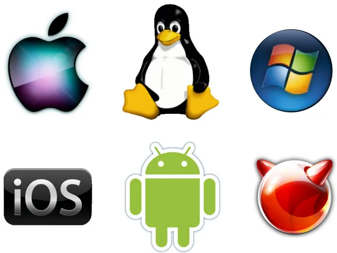

Een Operating System is de basissoftware die een computer, telefoon, of ander apparaat laat werken. Zonder een OS kan je helemaal niks met je apparaat doen, want het zorgt ervoor dat alles samenwerkt. Stel je voor dat je een bedrijf hebt met veel werknemers. Zonder een manager weet niemand wat ze moeten doen en loopt alles fout. Het OS in deze situatie is de manager. Het vertelt de onderdelen van je apparaat hoe ze moeten samenwerken. Bekende voorbeelden van Operating Systems zijn Windows, Android en iOS.
Een besturingssysteem (OS) voert verschillende taken uit om een computer of apparaat goed te laten werken. Het start het apparaat op en beheert alle hardware, zoals de processor, het geheugen, en randapparatuur zoals toetsenborden en printers, zodat deze goed samenwerken. Het verdeelt geheugen en zorgt dat meerdere programma’s soepel kunnen draaien. Daarnaast regelt het invoer en uitvoer, bijvoorbeeld door toetsaanslagen te verwerken of gegevens naar het scherm te sturen. Het OS beheert bestanden, zorgt voor de beveiliging tegen virussen en ongewenste toegang, en maakt verbindingen met internet of andere apparaten mogelijk. Verder biedt het een gebruiksvriendelijke interface en een platform waarop programma’s kunnen draaien, waardoor alles overzichtelijk en efficiënt werkt.
